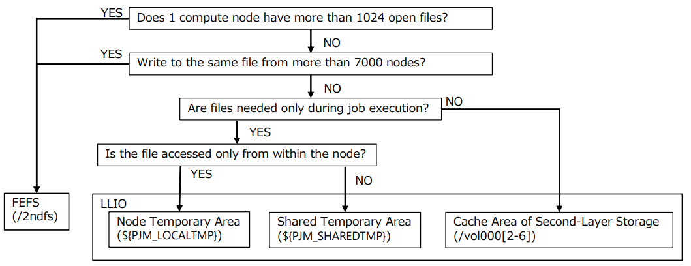
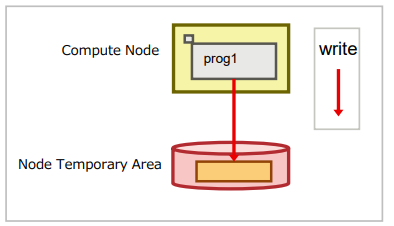

It is a dedicated file system for job execution, aiming for ease of use of hierarchical storage and faster I/O of application files. It is composed of SSDs and offers three types of areas for different purposes.
There are two types of storage: First-layer storage (LLIO) and Second-layer storage (FEFS). Cache function for FEFS that can be used during job execution.
When an application issues a READ request for a file, LLIO automatically reads the file data from the second-layer storage (FEFS) to the first-layer storage (LLIO) for caching.
When an application issues a WRITE request, it buffers the first-layer storage and LLIO writes to the second-layer storage (FEFS) asynchronously with application execution.
Directories and files created during job execution are not deleted after the job ends.
Shared temporary area
Intra-job share
[Temporary file]
A temporary area that can be used to share files within a job while the job is running. It is independent of second-layer storage (FEFS).
It is suitable for storing temporary files that share read and write data among multiple compute nodes on which an application is running. A temporary file system is created when the application is started using first-layer storage (LLIO).
After the job ends, the file system is automatically released and any directories and files created during the job are deleted.
Node temporary area
Intra-job share
[Temporary file]
A temporary area closed within one node that can be used during job execution. It is independent of Second-layer Storage (FEFS).
Creates a temporary file system when the application starts using first-layer storage (LLIO).
After the job ends, the file system is automatically released and any directories and files created during the job are deleted.
Layered storage is a file system that combines first-layer storage (LLIO) for high-speed access and second-layer storage (FEFS) for long-term storage of large amounts of data.
By processing IO from multiple compute nodes, you can expect fast access to files.
The availability of FEFS/LLIO can be checked using the following flow.

The LLIO area might not be available depending on the capacity. Use the FEFS area (/2ndfs).
For details, refer to First-Layer Storage Capacity Settings .
A temporary area enclosed within a compute node that provides fast access to temporary files.
Advantages
Points to consider
Because meta-processing is distributed across compute nodes, you can expect faster meta-access.
Expect faster file access by eliminating the need to export to second-layer storage.
Temporary files are automatically deleted without your knowledge.
The scope of sharing files is limited within the node.
File system capacity is limited.
How to use
Specify the job parameter “localtmp-size” in the job script.
The access path is set to the environment variable “PJM_LOCALTMP”.
Usage examples(1) : Improving Performance of File Access Closed in Nodes.
After specifying a temporary area in the node in the TMPDIR environment variable, you can expect fast file access for files read or written to this DIR.
The following is an example script for prog1 that creates an intermediate file in the TMPDIR environment variable.
#!/bin/bash -x
#PJM -L "rscunit=rscunit_ft01"
#PJM -L "node=48"
#PJM -L "rscgrp=small"
#PJM -L "elapse=1:00:00"
#PJM -g groupname
#PJM --mpi "max-proc-per-node=4"
#PJM --llio localtmp-size=30Gi # Specifies the amount of Node temporary area
#PJM --llio perf # Output of LLIO performance information
#PJM -s
export TMPDIR=${PJM_LOCALTMP}
mpiexec ./prog1
#File system disappears after job completion, so no need to delete

Usage examples(2) : Pre-deploy files for faster file access.
If there are executables or multiple input files, archive them. Transfer the archive file to a node temporary area and extract it before running the job.
This allows you to expect fast access to these files during job execution.
The following example expands an archive file into a node temporary area.
#!/bin/bash -x
#PJM -L "rscunit=rscunit_ft01"
#PJM -L "node=48"
#PJM -L "rscgrp=small"
#PJM -L "elapse=1:00:00"
#PJM -g groupname
#PJM --mpi "max-proc-per-node=4"
#PJM --llio localtmp-size=30Gi # Specifies the amount of Node temporary area
#PJM --llio perf # Output of LLIO performance information
#PJM -s
# Copy archive.tar to second-layer storage cache
llio_transfer ./archive.tar
# Extract archive.tar from one process in the node
mpiexec sh -c 'if [ ${PLE_RANK_ON_NODE} -eq 0 ]; then ¥
tar xf ./archive.tar -C $PJM_LOCALTMP; ¥
fi
# Delete archive.tar from second-layer storage cache
llio_transfer --purge ./archive.tar
# Run bin/prog1 in the archive.tar
mpiexec $PJM_LOCALTMP/bin/prog1
A closed temporary area within a job that provides fast access to temporary files.
Advantages
Points to consider
Expect faster file access by eliminating the need to export to second-layer storage.
Temporary files are automatically deleted without your knowledge.
The scope of sharing files is limited within the node.
File system capacity is limited.
When multiple processes write to the same file, locking is necessary. To perform locking programmatically, refer to Users Guide - Use and job execution Users Guide - Use and job execution. The lock processing can be substituted by using MPI-IO.
How to use
Specify the job parameter “sharedtmp-size” in the job script.
The access path is set to the environment variable “PJM_SHAREDTMP”.
Usage examples: Speed up access to files bound in a job, such as the progress of the job
By outputting the progress of the calculation to a shared temporary area, you can expect fast access to the file from the program.
The following example script reads the results of job prog1 and outputs the final calculation results to job prog2.
Job scripts that do not use shared temporary Area.
#!/bin/bash
#PJM -L "rscunit=rscunit_ft01"
#PJM -L "node=48"
#PJM -L "rscgrp=small"
#PJM -L "elapse=1:00:00"
#PJM -g groupname
#PJM --mpi "max-proc-per-node=4"
#PJM -s
### 1. Program prog1 prints out.data in the FEFS area.
mpiexec ./prog1 -o ./out.data
### 2. Program prog2 reads out.data and
### outputs the final result.data.
mpiexec ./prog2 –i ./out.data -o ./result.data
Job scripts using shared temporary area.
#!/bin/bash
#PJM -L "rscunit=rscunit_ft01"
#PJM -L "node=48"
#PJM -L "rscgrp=small"
#PJM -L "elapse=1:00:00"
#PJM -g groupname
#PJM --mpi "max-proc-per-node=4"
#PJM --llio sharedtmp-size=10Gi # Specifies the amount of Node temporary area
#PJM -s
### 1. Program prog1 outputs out.data to shared temporary area.
mpiexec ./prog1 -o ${PJM_SHAREDTMP}/out.data
### 2. Program prog2 reads out.data and
### outputs the final result.data.
mpiexec ./prog2 –i ${PJM_SHAREDTMP}/out.data -o ${PJM_SHAREDTMP}/result.data
#### 3. Save result.data to the job execution directory before job termination.
cp –p ${PJM_SHAREDTMP}/result.data ${PJM_JOBDIR}/result.data
You can expect fast access to files by caching data accessed in second-layer storage.
Advantages
Points to consider
If you access the same file multiple times, you can expect faster access to the file because cached data is used.
No script changes are required because it is accessible at the same path as secondlayer storage.
Write data is written to second-layer storage asynchronously with job execution.
When multiple processes write to each file at the same time, cache synchronization takes time.
When multiple processes write to the same file, locking is necessary. To perform locking programmatically, refer to Users Guide - Use and job execution Users Guide - Use and job execution. The lock processing can be substituted by using MPI-IO.
How to use
The access path is the same path as the second-layer storage.
Usage examples: Faster file access during job execution.
If you read from the same file multiple times, the cached data is used and you can expect fast access to the file.
The following is an example script for prog1.
Job scripts without cache area of second-layer storage.
#!/bin/bash
#PJM -L "rscunit=rscunit_ft01"
#PJM -L "node=48"
#PJM -L "rscgrp=small"
#PJM -L "elapse=1:00:00"
#PJM -g groupname
#PJM --mpi "max-proc-per-node=4“
#PJM --llio sio-read-cache=off # Do not use cashe area of second-layer storage
#PJM -s
### 1. Program prog1 prints out.data in the FEFS area
mpiexec ./prog1 ./in.data -o ./out.data
Job scripts that leverage cache area of second-layer storage.
#!/bin/bash
#PJM -L "rscunit=rscunit_ft01"
#PJM -L "node=48"
#PJM -L "rscgrp=small"
#PJM -L "elapse=1:00:00"
#PJM -g groupname
#PJM --mpi "max-proc-per-node=4“
#PJM --llio localtmp-size=0Gi # Specifies the amount of node temporary area.
#PJM --llio sharedtmp-size=0Gi # Specifies the amount of share temporary area.
### Capacity of cache area of second-layer storage is:
### 87GiB - (node temporary area + shared temporary area)
#PJM --llio sio-read-cache=on # Specify use of cache area of second-layer storage
#PJM -s
### 1. Program prog1 outputs out.data to cache area of second-layer storage.
mpiexec ./prog1 ./in.data -o ./out.data
Second-layer storage is a parallel distributed file system that can store large files.
Advantages
Points to consider
You can use FEFS for application work areas and areas under /home.
Each user has a limited capacity. If you need more capacity, you need to apply.
How to use
Second-layer storage is the area that you can log into a login node and access as home and data areas.
From the compute node, you can access the file using the same file path as above, but through first-tier storage.
To access second-layer storage from a direct compute node, use the dedicated space/2ndfs. Please check Users Guide - Use and job executionfor details on how to use /2ndfs.